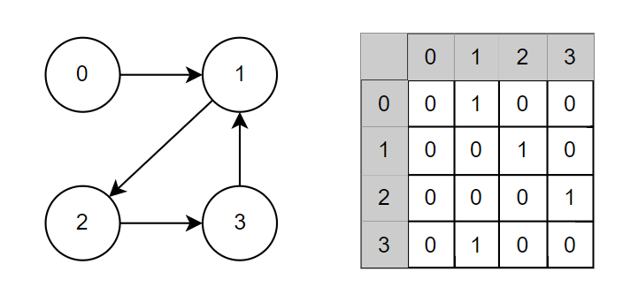

Graph
先前介紹的 Tree 只是 Graph 的其中一種，所以 Graph 不一定為 Tree，Graph 也包含了更多種 Tree 不存在的資料格式，如: 循環(cycle)、雙向(undirected) …等。
特性
Graph 可能會包含以下幾種特性:
Directed & Undirected
directed 代表節點之間是單向的，反之，undirected 節點之間是雙向的; 在 Tree 的資料結構中，只會有 direcrted 的情況Connected Graph
一個 Graph 可能由多個獨立的 subgraph 所組成，如果這些 subgraph 的頂點彼此相連，則可以成為 Conneceted GraphAcyclic Graph
與 Tree 不同的是，Graph 可以包含 cycle，也就是子結點可以指向回父結點，如果不包含 cycle 的 graph 則可以稱為 acyclic graph
Adjacency List
Adjacency List 是一種 Graph 中 常見的儲存方式，表示每個結點都會儲存相鄰的結點，所以在 Undirected Graph 中，如果 A 與 B 兩個結點彼此相鄰，A 的 Adjacency List 會儲存 B，反之，B 也會儲存 A。
與 Tree 不同的是，不需要透過固定的結點(root)來到達所有結點，所以基本的 Graph 會包含所有結點，如下所示:
1 | class Node { |
然而，其實不需要額外定義新的資料結構來代表 Graph，任何序列的資料格式，如 Array、Linked List 或 Hash Table …等，都可以作為 Graph 的格式應用
在 JavaScript ES6+ 中，可以透過 Map 輕易地完成 Graph 結構的基本實作，其他方法如下:
- addNode: 新增一個節點，並賦予一個 array 以儲存相鄰的結點
- addEdge: 為兩個結點建立連線，如果是 Undirected Graph，則會在兩個結點都分別記錄彼此的值
1 | const adjacencyList = new Map(); |
Adjacency Matries
Adjacency Matries 是透過 NxN boolean matrix 來表示 Graph，N 代表總共有 N 個個結點，matrix[i][j] 指向結點 i 到結點 j，boolean 則代表彼此是否相連; 一個 Undirected Graph 的 Adjacency Matrix 會呈現對稱

Search & Traversal
在 Graph 的搜尋(search)和遍歷(traversal)上，和 Tree 一樣普遍分成兩種方法，分別是依循深度 depth-first-search (DFS) 和廣度 breadth-first-search (BFS)
Bread First Search
在 JavaScript 中，可以透過建立一個 Queue，選定一個結點當作結點後，將其相鄰的結點儲存到 Queue 中，而根據 first-in-first-out 的特性，會依序沿著 level 向下尋找，直到 Queue 清空為止
1 | const bfs = (start) => { |
但這裡可能會有一個問題是，Graph 是允許包含 Circle 的，這種情況下， Queue 會永遠無法清空，進而產生無窮迴圈，所以需要再額外建立一個 list (visited)來儲存已經走訪過的結點，在 JavaScript 中，可以使用 Set 儲存不重複的值
1 | const bfs = (start) => { |
Depth First Search
這種搜尋方式會優先以第一個子結點向下尋找，直到沒有子結點後，才會回到上層繼續尋找其他子結點，適用於搜尋明確的兩點間最佳距離
1 | const dfs = (start, visited = new Seet()) => { |
時間複雜度
在 Graph 中，BFS 和 DFS 的時間複雜度都是 O(n)，這裡的 n 來自於結點(vertex) + 邊(edges) 的總和，所以會與資料量呈正比增加
參考資料
Cracking the Coding Interview
Graph Search Algorithms in 100 Seconds - And Beyond with JS